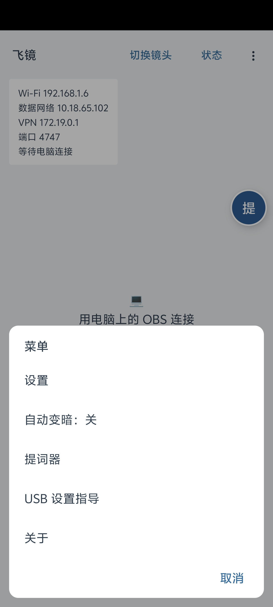
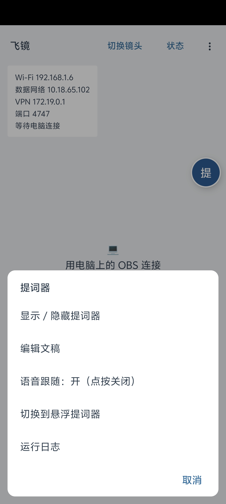
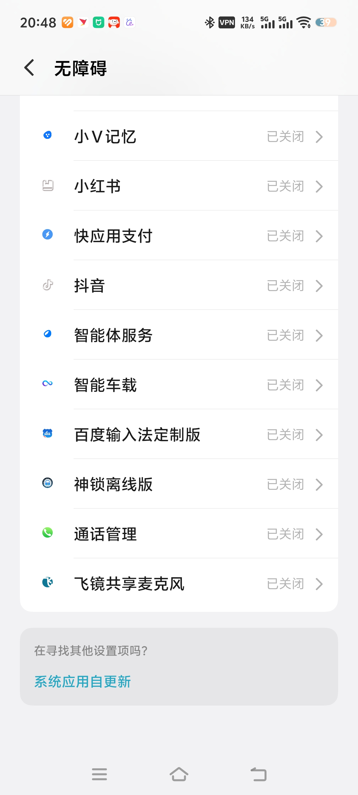

手机 + OBS
手机负责拍摄和显示应用内提词，电脑上的 OBS 接收干净画面。提词文字不会进入直播画面。
从 Wi-Fi 连接开始 →飞镜使用指南
先选拍摄方式，再按步骤设置。OBS 模式把手机变成电脑摄像头；悬浮模式让原厂相机上方继续显示并跟读提词。
手机负责拍摄和显示应用内提词，电脑上的 OBS 接收干净画面。提词文字不会进入直播画面。
从 Wi-Fi 连接开始 →飞镜浮在原厂相机之上；开启共享麦克风无障碍服务后，录像时仍可语音跟随。
从悬浮模式开始 →下面按 DroidCam OBS 官方流程整理，并把飞镜里的入口和状态对应起来。
先安装 OBS Studio，再从 DroidCam 官网选择与你当前 OBS 版本兼容的插件。插件安装完成后，完全退出并重新打开 OBS。
两台设备连接同一个路由器，优先使用稳定的 5 GHz Wi-Fi。访客网络、VPN 和公司隔离网络可能阻止互相发现。
打开飞镜，点击顶部“状态”。记下 Wi-Fi 后面的地址，例如 192.168.1.6。不要使用“数据网络”“VPN”“其他网络”的地址，也不要填写 127.0.0.1。
在 OBS 的“来源”区域点击“+”，选择 DroidCam OBS。如果列表中没有这一项，说明插件尚未正确安装或 OBS 还没有重启。
打开刚添加的来源属性，将 Device 选为 Use WiFi，在 WiFi IP 填入手机显示的 Wi-Fi 地址。只填数字与小数点，不要加 http://，也不要把 :4747 写进 IP 框。
如果没有看到 WiFi IP 输入框，请在来源属性窗口内向下滚动。
第一次建议选择 1280 × 720、30 fps、AVC / H.264，再点击 Activate。连通后再按网络和电脑性能提高画质。
以下三项同时出现就代表连接成功：OBS 预览出现手机画面；飞镜顶部状态卡自动收起；再次点“状态”能看到“推流中，客户端 1”。
要使用 AI 语音跟随：不要在 DroidCam OBS 来源里开启手机音频。让飞镜独占手机麦克风，OBS 改用电脑麦克风或其他麦克风来源。
要把手机声音送进 OBS：可以打开插件的 Enable Audio，但飞镜会暂停语音跟随，提词器改用定速滚动。
Wi-Fi 延迟高或网络受限时使用。不同 Android 品牌的开发者选项入口略有不同。
手机“设置”中连续点击版本号，开启开发者选项，再打开 USB 调试。
使用支持数据传输的 USB 线连接电脑；手机弹出授权时选择允许。
在 DroidCam OBS 来源属性中点击 Refresh Device List，选择出现的手机。
点击 Activate。仍未发现设备时，换数据线或 USB 接口，并确认 Windows 已识别手机。
这套模式在飞镜 App 内显示提词，OBS 只收到摄像头画面，不会录到文字。
在飞镜主界面点击右上角“⋮” → “设置” → “提词器” → “文字”。粘贴或修改口播稿并返回，预览与提词内容会立即更新。
在同一页设置“字号”“速度”“镜像”和“语音跟随”。字号以不眯眼为准；速度只影响定速模式；使用实体反光提词器时才需要镜像。
回到主界面，点右侧蓝色“提”按钮，再选“显示提词器”；也可以从右上角“⋮” → “提词器”进入。
读过的文字会变灰，蓝色位置标记会跟着当前内容移动。连续空行会压缩处理，并提前露出下一段，避免小窗口看不到下一句。


Android 通常只允许一个应用占用麦克风。原厂相机开始录像后，飞镜需要通过这项无障碍服务共享声音，才能继续识别和滚动。
只帮助飞镜在录像时继续取得麦克风声音。它不会读取屏幕内容、记录按键、代替你点击，也不会上传音频。

先在飞镜完成文字与权限设置，再手动打开手机自带相机。
点击“⋮” → “设置” → “提词器” → “文字”，粘贴文稿；按需要设置字号、语速与语音跟随。
在“设置 → 提词器”底部点击“切换到悬浮提词器”；也可以点蓝色“提”按钮，选择同名入口。
允许麦克风权限；需要录像时语音跟随，请开启“飞镜共享麦克风”无障碍服务。若系统仍询问“显示在其他应用上层”，也请允许。
飞镜进入悬浮状态后，手动打开手机原厂相机。悬浮窗显示“等待语音”或“语音跟随中”后开始朗读，读过区域会逐渐变灰并自动滚动。
点击悬浮窗左上角“回到 App”，会保留当前阅读位置；点击右上角“×”关闭悬浮提词器。
填写飞镜“状态”里 Wi-Fi 后面的地址。WiFi IP 框只填类似 192.168.1.6 的内容；端口单独填 4747。不要填数据网络、VPN 地址，也不要输入 http://。
重新确认安装的是与当前 OBS 版本兼容的 DroidCam OBS 插件，并在安装后完全重启 OBS。添加入口位于 OBS“来源”区域的“+”菜单。
确认手机和电脑连接同一局域网，临时关闭 VPN，避免访客 Wi-Fi；点击 Activate 前先用 720p / 30 fps / H.264。若网络有设备隔离，改用 USB。
检查“飞镜共享麦克风”无障碍服务、麦克风权限和悬浮窗权限是否都已开启。部分 vivo、OPPO、小米设备还需允许后台运行并关闭飞镜的省电限制。
检查 DroidCam OBS 来源是否开启了手机音频。手机音频推流会占用麦克风，此时飞镜自动暂停语音跟随。关闭 Enable Audio，并在 OBS 中改用电脑麦克风即可恢复。
先降低到 1280 × 720、30 fps，使用 H.264，并优先连接 5 GHz Wi-Fi；直播环境建议使用 USB 或稳定局域网。
拖动提词器底部把手可只增加高度；飞镜也会压缩连续空行，并在当前段落读完时提前露出下一段。双指缩放会同时改变窗口与字号。
本指南中的 OBS 安装与连接步骤参照官方资料整理。
Android 6.0+；悬浮语音跟随建议 Android 10+。